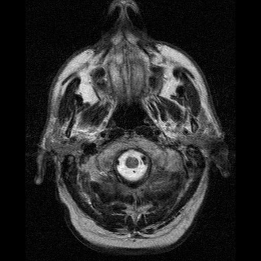

Magnetic Resonance Imaging (MRI) is a non-invasive imaging technology that produces highly detailed images of the internal structures of the body, including organs, tissues, and the brain.
MRI uses powerful magnetic fields and radio waves instead of harmful X-rays, making it safe for repeated examinations. It is widely used for diagnosing diseases such as tumors, brain disorders, spinal injuries, and cardiovascular problems.
Different MRI sequences, such as T1, T2, and FLAIR, provide distinct information about tissue composition and pathology.
